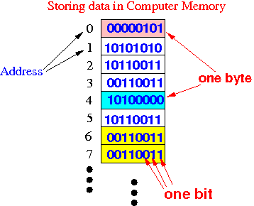
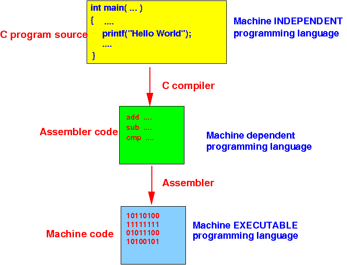

Review: computer program
- A
computer program consists
of a
series
(= many !!) of
computer instructions
- Computer instructions are
stored as
binary numbers (= codes) in
the computer memory
- Things in
the computer memory
look something like this:

- This
does not
look like
anything that
I have learned in
CS170/CS171....
WHY ???
|
High level language and
low level language programming
- In
CS170/CS171,
you were writing computer programs in
a
high level programming language
-- e.g.: Java
- In
high level language programming,
a programmer (= you)
write
a (Java) program using
English-like
statements
E.g.:
public class MyProg
{
public static void main(String[] args)
{
System.out.println("Hello World");
}
}
|
-
In contrast:
computer (machine) instructions
is a
low level programming language
|
High level language and
low level language programming
The
historical development of
computer programming languages
The
first generation
programming languages:
(reference:
click here )
The
historical development of
computer programming languages
The
2nd generation
programming languages:
(Wikipedia:
click here )
The
historical development of
computer programming languages
The
3rd generation
programming languages:
(Wikipedia:
click here )
- In 1957,
the first
high level programming language
(Fortran) was
available
- Programmers would
write a
English-like statements
and use a
more complex
compiler (translator) program
to translate the
statements into
binary computer (machine) instructions
in a 2 step process:

|
Example to show you the
entire program compilation process - DEMO
The programmer write a
program in a
High level language program
(C language):
int x, y, z;
int main( )
{
z = x + y;
}
|
DEMO:
/home/cs255001/demo/translation-process/prog.c
Example to show you the
entire program compilation process - DEMO
The programmer write a
program in a
High level language program
(C language):
int x, y, z;
int main( )
{
z = x + y;
}
|
The compiler will
translate the
(C) program into
an
equivalent program written
in assembler code:
(Typically: 1 statement will
general
many instructions !!)
main:
str fp, [sp, #-4] // These assembler codes
add fp, sp, #0 // perform: z = x + y
ldr r3, .L3
ldr r2, [r3]
... (many more, omitted for brevity)
|
DEMO:
/home/cs255001/bin/cc255 -S prog.c
Example to show you the
entire program compilation process - DEMO
This was the output of
the compiler
(a series of
assembler codes)
main:
str fp, [sp, #-4]
add fp, sp, #0
ldr r3, .L3
ldr r2, [r3]
...
|
Example to show you the
entire program compilation process - DEMO
This was the output of
the compiler
(a series of
assembler codes)
main:
str fp, [sp, #-4]
add fp, sp, #0
ldr r3, .L3
ldr r2, [r3]
...
|
An assembler will then
translate the
assembler codes into
(binary) machine instruction codes:
00000000 <main>:
0: e52db004 <-- binary number written in hexadcimal
4: e28db000 // These are (binary) machine codes !!!
8: e59f3028
...
|
DEMO:
/home/cs255001/bin/cc255 -c prog.s (dump255 prog.o)
Reasons to
study assembler programming in
CS255
Because
I can only
expose/illustrate the following
computer science concepts
using
an assembler programming language:
- What happens inside the computer
when you
define a
variable in your
program ?
- How does
a computer program
use
array variables ?
- How does
a computer program
use
linked list variables ?
- What happens inside the computer
when an
assignment statement is
executed ?
- What happens inside the computer
when an
if-statement is
executed ?
- What happens inside the computer
when a method
passes parameters and
returns a value
- What happens inside the computer
when a
parameter is
passed by value and
passed by reference ?
- What happens inside the computer
when a
recursive function/method is
executed ?
|
All these
concepts and more will be
explained in
CS255 - and
illustrated with
assembler codes
❮
❯